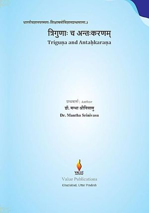
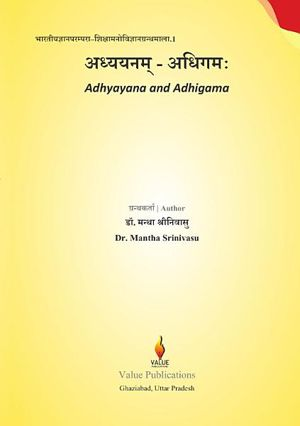
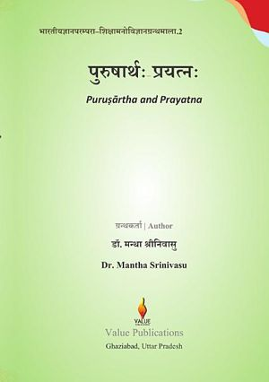
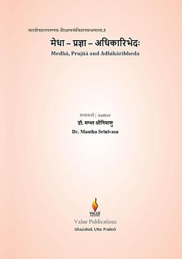
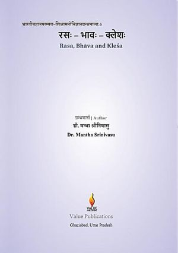
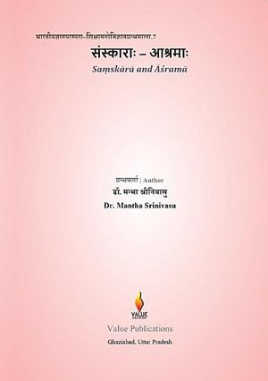
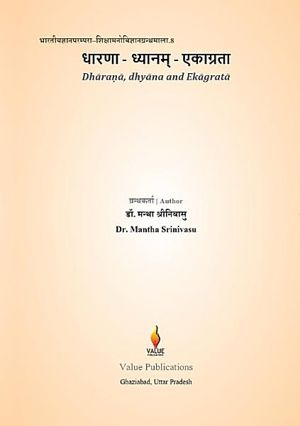
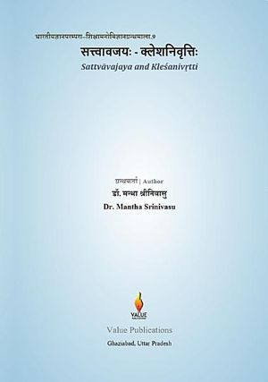
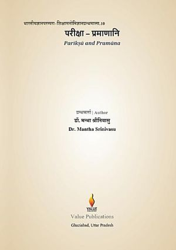

त्रिगुणाः च अन्तःकरणम्
Triguṇa and Antaḥkaraṇa
Google PlayLibraryWho is a person, what kind of person are they, and how did they become so? The third volume presents the Indian traditions' remarkably varied theories of personality and compares them carefully with Western personality psychology.
The book explains the nature and function of sattva, rajas and tamas; the fourfold inner instrument of manas, buddhi, ahaṅkāra and citta; and Yoga's theory of citta-bhūmis and vṛttis as a science of personality. It asks how personality is bound by saṃskāra and character (śīla), and how far it can be changed. It then surveys the Buddhist typology of six caritas, the Jaina doctrine of leśyā and kaṣāya, the Āyurvedic classification of prakṛti, sāra and sattva, the deeper questions of ātman, kośa and jīva, and the literary and practical traditions of nāyaka-bheda and puruṣa-parīkṣā — the description and assessment of persons.
A final chapter compares these systems with the major Western theories of personality and offers balanced judgements against eight stated criteria. Supported by a criteria appendix, a glossary, source lists and an index, the volume will serve researchers, teachers and students of psychology, education, Sanskrit and Indian Knowledge Systems.
Keywords: personality theory, triguna, antahkarana, sattva rajas tamas, Yoga psychology, Ayurveda prakriti, Buddhist psychology, Jaina, Indian psychology, IKS, Sanskrit
भारतीयज्ञानपरम्परा–शिक्षामनोविज्ञानग्रन्थमाला · Indian Knowledge Systems & Educational Psychology

अध्ययनम् – अधिगमःSanskrit

पुरुषार्थः – प्रयत्नःSanskritस्मृतिः – संस्कारः – धारणा
Sanskrit

मेधा – प्रज्ञा – अधिकारिभेदःSanskrit

रसः – भावः – क्लेशःSanskrit

संस्काराः – आश्रमाःSanskrit

धारणा – ध्यानम् – एकाग्रताSanskrit

सत्त्वावजयः – क्लेशनिवृत्तिःSanskrit

परीक्षा – प्रमाणानिSanskrit